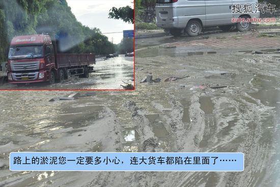

雨季开车实用攻略
7月21日，北京出现的强暴雨为61年来最强降雨，连续十余个小时的降雨，使部分路面大量积水。北京的车主朋友们，相信这场降水多少会给您带来不便，甚至是严重损失。那么，雨中行车我们应注意哪些呢？假如您的爱车进水了，应该怎么办呢？别担心，搜狐汽车·用车频道就来帮您解决雨后难题。
7月21日当晚，北京立水桥地区积水严重，许多车辆浸泡在水中无法行驶，交通被迫中断。22日上午，雨过天晴，北京交通正在紧锣密鼓地恢复中。我们选取了积水状况比较严重的几个路段，具体情况如下图所示。
雨天驾驶注意事项：
雨天驾驶，影响最大的就是视线差和路面湿滑。因此，需要保持足够的安全距离并放慢车速，行车的安全距离应为平常的一倍以上，为60米左右。另外，在过弯道、并线的时候，务必加倍小心。
小雨
小雨刚下的时候，路面微湿，这时的道路最滑，也最容易发生交通事故。所以，驾车时开始下雨了，您就要谨慎驾驶了，在进入弯道前一定要降低车速，谨慎过弯，左右并线也要放慢车速。
大雨
雨下大了，就会影响驾驶员的视线。大雨中，视线会变得很模糊，能见度小于200米的时候，要开启近光灯和雾灯，能见度小于100米的时候，应开启危险报警闪光灯，并降低车速，保持足够的安全距离。
涉水深度判断：
当水深为轮胎的三分之一高度时，您可以放心通过，只要您操作正确，不会造成不必要的损失（具体操作方法下文介绍）。
当水深超过轮胎一半高度时，您就要小心了，因为这种情况下容易造成车内进水。
如果涉水深度超过保险杠，行车时应该提高警惕，避免发动机进水。
涉水技巧：
涉水前，您一定要多观察，不管涉水深度是多少，挂低速挡，缓慢通过；
涉水过程中，稳住方向盘和油门，保持车辆有足够而稳定的动力，使排气管中始终有压力气体，防止水倒灌入排气管，造成熄火。尽量一气呵成，避免中途停车、换挡、急转弯或急打方向盘。
涉水完成后，点刹几次，利用摩擦生热使刹车片上残留的水分蒸发，以免刹车不灵敏。
停放及行驶车辆技巧：
在自己不熟悉路况时，请不要贸然前行，观察一下其它车辆的行驶路线再继续前行，但要注意不要多车同时下水，防止前车因故障停车，迫使后车也停在水中导致进退两难，并且别的车辆行驶会引起波浪，进而加大自车的风险；
涉水前检查您的车牌是否牢固，避免车牌脱落，找回和补办都是较为麻烦的；
有淤泥的道路您应该多加留意了，雨水冲刷堆积的淤泥很容易使您的爱车陷在里面；
雨后尽量避免行走山路，以免山体滑坡、泥石流等；
停放车辆时要停在空旷的地势较高处，并远离围墙、车辆、路牌等，防止积水冲垮上述物品，连累您的爱车，造成不必要损失；


汽车进水部位：
车内进水
车内进水首先遭殃的就是地胶，如果进水较多则会引起中控失灵。车内积聚了大量潮气，一定要尽快除掉，否则容易发生霉变。因此，要及时擦干汽车的电器部件，有条件的用风扇对车内进行干燥处理，以防电线部分短路。
如果整车全部或大部分被水淹，需要在4S店进行全面的拆装、清洗、烘干全车坐椅和地毯，以及检修全车电器、线路等。
发动机进水
车辆涉水后，水由进气歧管进入气缸，由于水的不可压缩性，活塞运动行程将会变短从而导致发动机连杆弯曲或断裂，极端条件下会造成断裂连杆飞出击穿缸体。
发动机进水的判定方法与步骤：

1、检查空滤与进气歧管：检查空滤及空滤下壳体有无较明显进水痕迹,检查进气管及进气歧管内有无明显过水痕迹。进气管进水痕迹
2、检查机油：拔出油尺，检查是否油水混合有乳白色油水混合物产生。
3、检查火花塞：拆下各气缸火花塞并检查其是否潮湿。
4、检查发动机气缸壁积炭痕迹：发动机正常工作时，各缸活塞到达上止点的位置相同，气缸壁上止点位置（压缩余隙）清晰。当发动机进水后，由于水难以被压缩，导致活塞无法到达原有上止点位置，活塞运动行程变短，上止点位置会有较明显下移。
备注：发动机进水不一定会造成每缸连杆都会弯曲或者断裂。
特别提醒：不管汽车进水多少，建议您都到专业维修地点进行彻底检查，以免留下隐患，影响日后行驶。
汽车进水怎么办：
汽车在水中熄火的原因是发动机空滤器滤芯浸水，导致进气阻力增大和燃烧室进水，火花塞无法点燃。在这个时候，您千万不能重新启动发动机，这样很容易爆缸。
正确的方法是：
1、应该将车辆推出深水区，确保发动机进气口不会再吸入水分，在安全的地方停好。
2、如果是进气道进水，就必须更换空气滤清器，并拆掉火花塞后将燃烧室里的水排出。
燃烧室排水方法：
打开发动机盖，拔下分缸点火线圈，将火花塞拆下来；
启动发动机，发动机汽缸内的水就会通过火花塞的孔被排出发动机，将钥匙保持在启动位置5秒后松开；
等10秒钟后再启动发动机5秒钟；
如此3次，基本上可以将水全部排出发动机了。
如果在拆下火花塞后启动时发动机没有转动，则说明发动机已经顶死，只能进维修站处理。
保险及注意事项：
1、万一车子进水了，千万别动，这点切记，建议被浸泡车辆叫拖车救援；
2、别管能不能赔，先给保险公司打电话备个案；（一定要在24时之内报案）
3、留一份当天的报纸或可以说明当日天气的证明，以备以后的不时之需；
4、车辆进水后应尽快联系维修，而不是我们常说的先凉一凉，因为一些电子元件如果沾水后没有及时清洁，有可能受到进一步的损害。
总结：这场暴雨过程中，截止到发稿时，7月21日以来，北京暴雨洪涝灾害已导致37人死亡，7人失踪。转移群众1万4千5百名左右，投入抢险的干部不下10万人。
|